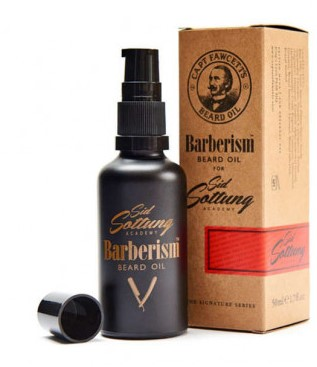

|

|
Olio per barba fatto a mano da 50 ml per uso quotidiano, olio che nasce dalla collaborazione di Captain Fawcett con Barberism. Con un elegante profumo dove si posso ascoltare note di Lime e Arancio con note medie di Legno di Cedro, Patchouli e Muschio. Prezzo: 50,00 € |